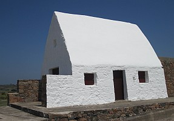

La p'tite blianche maîson dans la Baie d'St. Ouën est bein connue et a sèrvi d'mèr pouor les navidgants pouor bein d's années. Mais tch'est qu'est l'histouaithe dé chutte caumine?
Au jour d'aniet oulle appartcheint au National Trust for Jersey (et est connue étout souos l'nom Le Don Hilton, ayant 'té présentée au Trust par la Danme M. G. Hilton en mil neu chents septante-chînq).
Chu bâtisse est mentionné dans les r'cords pouor la preunmié fais en mil siêx chents souaixante-chînq coumme la Maîson d'Garde dé St. Pièrre. Auprès eune expliôsion d'poudre lé bâtisse fu r'bâti en mil sept chents souaixante-chînq. I' fut dêcrit comme eune batt'tie au dgiêx-neuvième siècl'ye.
Mais tchi qui 'tait Marie Best? I' sembl'ye qu'eune cèrtaine Mèrdgitte Carrell (née en mil sept chents chînquante-six) s'mathyit auve un soudard Angliais, Adam Best, en mil sept chents huiptante-tch'ieune. Lé coupl'ye eut eune fil'ye, Mèrdgitte ou Marie, d'vièrs mil sept chents nénante.
Eune achie d'la vétheule dans l'vaîthinné d'St. Ouën en mil sept chents nénante-chînq tuit chent-iun soudards, et la fanmil'ye Best lus êcappit à la p'tite caumine sus la côte. Marie Best y r'vînt pus tard dans sa vie.
Viyiz étout: